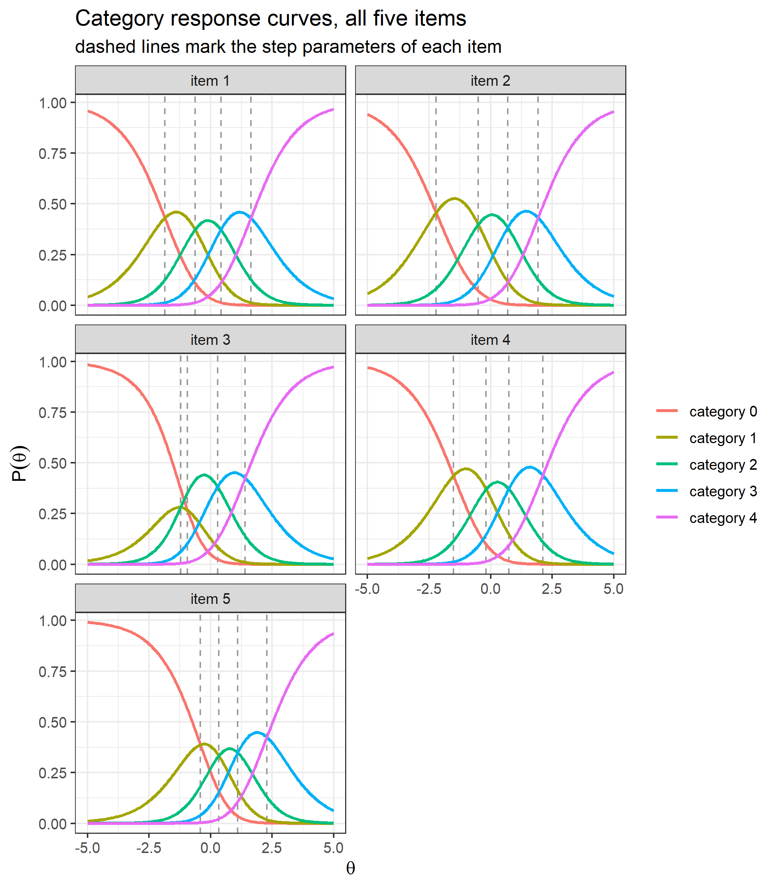
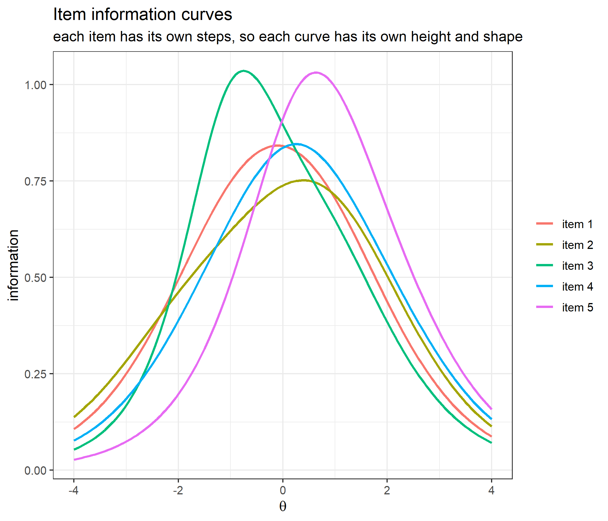
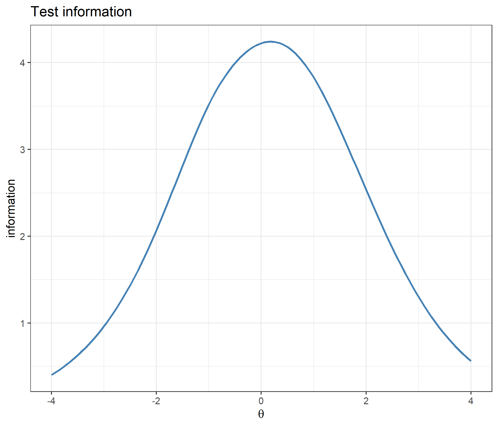
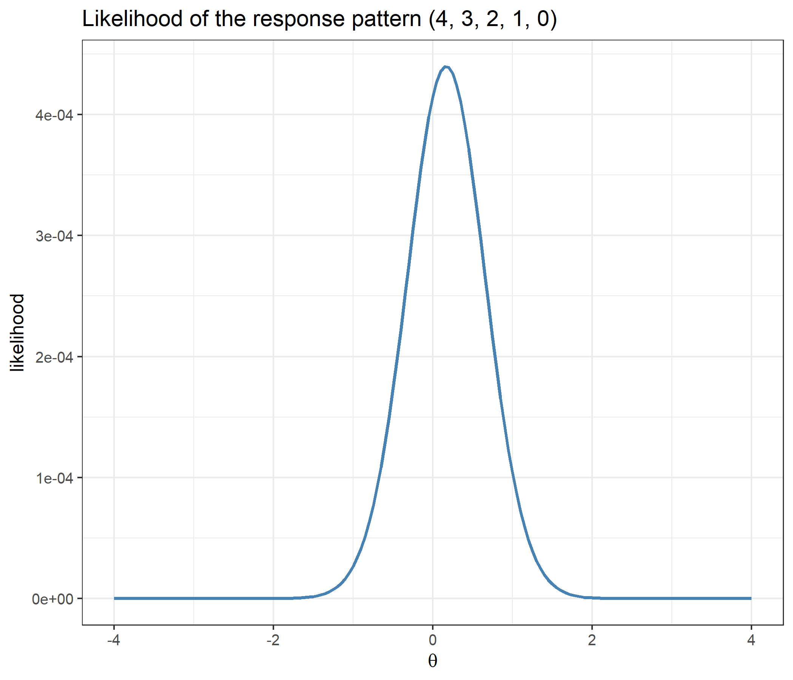
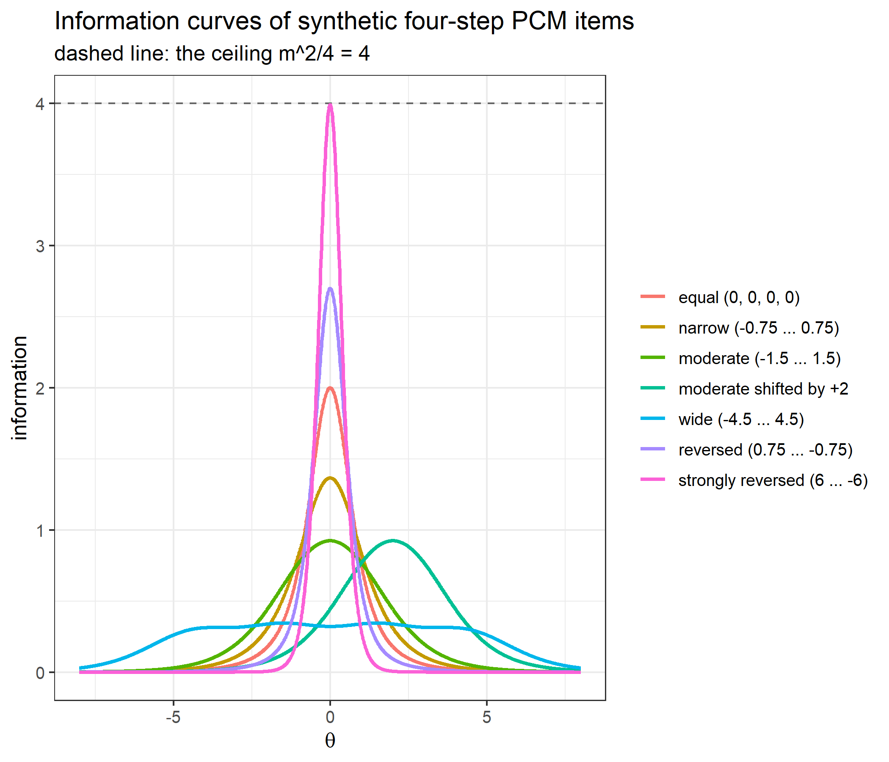
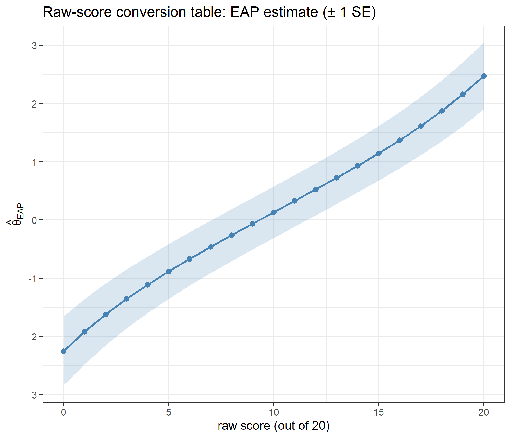
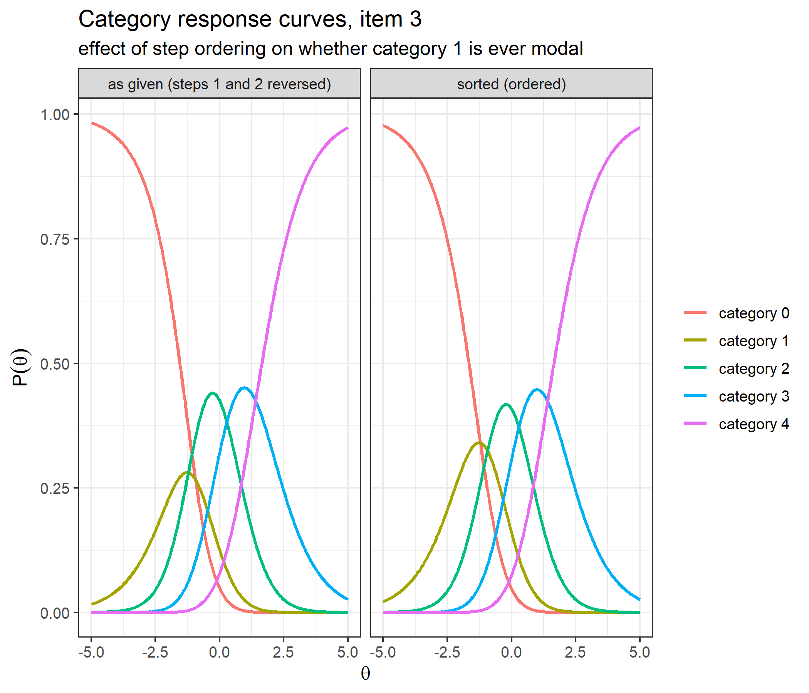
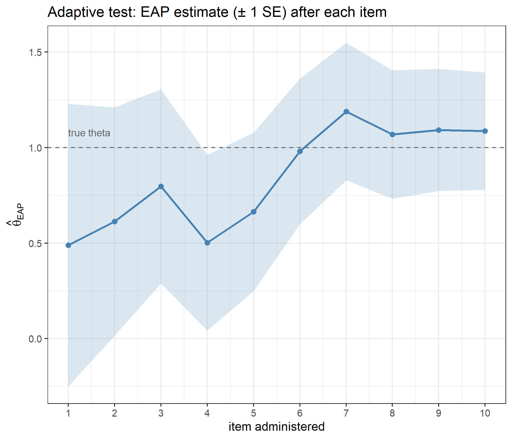

Code
library(ggplot2)
library(catR)
source("R/cat_eap_common.R", local = knitr::knit_global())
source("R/cat_eap_pcm.R", local = knitr::knit_global())
source("R/cat_eap_rsm.R", local = knitr::knit_global())The functions in cat_eap_common.R and cat_eap_pcm.R are adapted from the source code of the catR package by David Magis, Gilles Raîche and Juan Ramón Barrada (Magis & Raîche, 2012; Magis & Barrada, 2017). The model parameterisations, the formulas for the response probabilities and their derivatives, the item information, maximum-information item selection and the trapezoidal EAP integration all follow catR’s Pi(), Ii(), nextItem(), eapEst(), eapSem() and integrate.catR(), and much of the code keeps catR’s structure line for line. The purpose of the rewrite is teaching, not replacement: every step is written out in plain base R so that it can be read, and catR remains the reference implementation that every function is checked against below. catR is free software distributed under the GNU General Public License (version 3 or later).
The Partial Credit Model (PCM) of Masters (1982) is a Rasch model for items scored in ordered categories \(0, 1, \ldots, m_j\), where each item has its own set of step parameters. It was designed for tasks that award partial credit — a multi-step problem scored by the number of steps completed, a rubric-scored essay — and it is equally usable for rating-scale items whose response options cannot be assumed to work the same way on every item. That last point is what separates it from the Rating Scale Model (RSM), in which every item shares one set of category thresholds. The PCM keeps the Rasch-family properties of the RSM — no discrimination parameter, and a raw score that is a sufficient statistic for ability — while letting each item have its own category curves and its own information curve.
working_examples/cat_eap_pcm.R implements the EAP pipeline for the PCM in six functions, which call the two general helpers in working_examples/cat_eap_common.R. Everything is plain base R, with no runtime dependency on catR:
| Function | File | Purpose | catR equivalent it mirrors |
|---|---|---|---|
density_function() |
cat_eap_common.R |
Normal density | stats::dnorm() |
integrate_cat() |
cat_eap_common.R |
Numerical integration (trapezoidal rule) | catR::integrate.catR() |
compute_pi_pcm() |
cat_eap_pcm.R |
Category response probabilities and their first three derivatives | catR::Pi(model="PCM") |
compute_ii_pcm() |
cat_eap_pcm.R |
Item information and its first two derivatives | catR::Ii(model="PCM") |
compute_next_item_pcm() |
cat_eap_pcm.R |
Maximum Fisher information item selection, with optional randomesque exposure control | catR::nextItem(model="PCM", criterion="MFI") |
compute_likelihood_pcm() |
cat_eap_pcm.R |
Likelihood of a polytomous response pattern | (internal to catR::eapEst()) |
compute_eap_pcm() |
cat_eap_pcm.R |
EAP ability estimate | catR::eapEst(model="PCM") |
compute_eap_se_pcm() |
cat_eap_pcm.R |
EAP standard error | catR::eapSem(model="PCM") |
cat_eap_common.R is sourced first because the PCM functions call density_function() and integrate_cat(). cat_eap_rsm.R is only needed for the comparison with the Rating Scale Model further down.
library(ggplot2)
library(catR)
source("R/cat_eap_common.R", local = knitr::knit_global())
source("R/cat_eap_pcm.R", local = knitr::knit_global())
source("R/cat_eap_rsm.R", local = knitr::knit_global())A polytomous item scored \(0,1,\ldots,m_j\) needs \(m_j+1\) category response curves that sum to 1 at every ability level. The PCM builds them from \(m_j\) steps: to reach category \(k\) a respondent has to complete steps \(1\) to \(k\), and step \(t\) of item \(j\) has its own difficulty \(\delta_{jt}\).
\[P_{jk}(\theta) = P(X_j = k \mid \theta) = \frac{\exp\left[\sum_{t=1}^{k} D(\theta - \delta_{jt})\right]}{\sum_{h=0}^{m_j}\exp\left[\sum_{t=1}^{h} D(\theta - \delta_{jt})\right]}, \qquad k = 0, 1, \ldots, m_j\]
with the empty sum for \(k=0\) taken to be zero.
There is no discrimination parameter: every step of every item has the same slope \(D\), which is what makes the PCM a Rasch model.
The meaning of a step parameter is clearest in the ratio of two adjacent categories, where the common denominator cancels:
\[\log\frac{P(X_j = k \mid \theta)}{P(X_j = k-1 \mid \theta)} = D(\theta - \delta_{jk})\]
Given that the response is either \(k-1\) or \(k\), the item behaves like a dichotomous Rasch item with difficulty \(\delta_{jk}\). In particular the curves of categories \(k-1\) and \(k\) cross at \(\theta = \delta_{jk}\), which is checked numerically in the worked example on threshold ordering.
The Rating Scale Model is the special case \(\delta_{jk} = \lambda_j + \delta_k\): one location per item plus one set of thresholds shared by the whole bank (Andrich, 1978). A bank of \(n\) items with \(m\) steps each needs \(n \times m\) step parameters under the PCM but only \(n + m - 1\) free parameters under the RSM: \(n\) locations and \(m\) thresholds, less one, because adding a constant to every \(\lambda_j\) and subtracting it from every \(\delta_k\) leaves every \(\delta_{jk}\) unchanged. Adding an item-specific discrimination \(a_j\), that is replacing every \(D(\theta - \delta_{jt})\) above by \(Da_j(\theta - \delta_{jt})\), gives the generalised partial credit model, which is not covered here; the PCM is its special case \(a_j = 1\).
cat_eap_pcm.R expects one row per item and one column per step:
NA in its last columns. The code builds the cumulative sums \(\sum_{t \le k}\) one step at a time and drops every category whose sum is NA, so an NA in the middle of a row does not skip one step — it removes every category above it (shown below). As an exact rule: \(m_j\) is the number of entries of row \(j\) before its first NA (\(m\) if there is none), categories \(m_j+1,\ldots,m\) are returned as NA in Pi and in all three derivatives, and every sum over categories below runs over \(0,\ldots,m_j\) only;mirt with itemtype = "Rasch" maps directly, \(\delta_{jt} = b_{jt}\), where \(b_{jt}\) are the columns b1 to bm of pars$items with pars <- mirt::coef(model, IRTpars = TRUE, simplify = TRUE); a dichotomous item’s single b goes in the first column. It is used with \(D = 1\) and, because mirt estimates the latent variance of a Rasch model, with priorPar = c(0, sqrt(pars$cov)).Write \(E_j\), \(V_j\) and \(\kappa_{3j}\) for the mean, the variance and the third central moment of the item score at \(\theta\), so that \(E_j = E(X_j\mid\theta)\) and \(V_j = \mathrm{Var}(X_j\mid\theta)\):
\[E_j = \sum_{h=0}^{m_j} h\,P_{jh}(\theta) \qquad V_j = \sum_{h=0}^{m_j} (h-E_j)^2\,P_{jh}(\theta) \qquad \kappa_{3j} = \sum_{h=0}^{m_j} (h-E_j)^3\,P_{jh}(\theta)\]
Differentiating the category probability gives the standard Rasch-family result for the first derivative, and differentiating twice more, with \(E_j' = DV_j\) and \(V_j' = D\kappa_{3j}\), gives the second and the third:
\[P'_{jk} = D\,P_{jk}\,(k-E_j) \qquad P''_{jk} = D^2P_{jk}\big[(k-E_j)^2-V_j\big] \qquad P'''_{jk} = D^3P_{jk}\big[(k-E_j)^3-3V_j(k-E_j)-\kappa_{3j}\big]\]
compute_pi_pcm() returns the probabilities Pi together with three derivatives dPi, d2Pi and d3Pi. It writes the numerator of category \(k\) as \(\gamma_{jk} = \exp\big[\sum_{t\le k} D(\theta-\delta_{jt})\big]\) and differentiates it as \(\gamma_{jk}\,k\), exactly as catR::Pi() does, where the exact derivative is \(\gamma_{jk}\,D\,k\) (the exact line is left commented out in the source). The derivatives it returns, written \(\dot P_{jk}\), \(\ddot P_{jk}\) and \(\dddot P_{jk}\) from here on, are therefore the three above without their powers of \(D\):
\[\dot P_{jk} = \frac{P'_{jk}}{D} = P_{jk}\,(k-E_j) \qquad \ddot P_{jk} = \frac{P''_{jk}}{D^2} = P_{jk}\big[(k-E_j)^2-V_j\big] \qquad \dddot P_{jk} = \frac{P'''_{jk}}{D^3} = P_{jk}\big[(k-E_j)^3-3V_j(k-E_j)-\kappa_{3j}\big]\]
With \(D = 1\) the returned and the exact derivatives coincide. With \(D = 1.702\) the probabilities are still exact, but dPi is the true slope divided by \(D\), and each higher derivative loses one more factor of \(D\). The function keeps catR’s convention on purpose so that the two return the same numbers. The validation of the probabilities below confirms the factors against finite differences; the subsections on next-item selection and on EAP explain why the convention changes neither item selection nor EAP scoring.
Unlike compute_pi_dichotomous(), compute_pi_pcm() applies no probability floor, and neither does the polytomous branch of catR::Pi(). None is needed: every category probability is a positive exponential divided by a sum of positive exponentials, and the information below divides each squared slope by its own category probability, never by \(1-P_{jk}\), so a probability that rounds to exactly 1 far out in a tail cannot make it infinite. The only guards are the NA rule of the bank layout and na.rm = TRUE in the category sums of compute_ii_pcm(), which skips the NA categories of padded items.
\[I_j(\theta) = \sum_{k=0}^{m_j} \frac{P'^2_{jk}(\theta)}{P_{jk}(\theta)} = D^2\,V_j\]
The second equality follows from substituting \(P'_{jk}\) above and is specific to the Rasch family: the information of a PCM item is its conditional score variance, scaled by \(D^2\). Because compute_ii_pcm() builds the sum from catR’s derivative,
\[\texttt{Ii} = \sum_{k=0}^{m_j} \frac{\dot P_{jk}^2}{P_{jk}} = V_j = \frac{I_j(\theta)}{D^2},\]
it returns \(\mathrm{Var}(X_j\mid\theta)\) itself — the exact information at \(D=1\), and the exact information divided by \(D^2\) at \(D=1.702\). Three consequences, all checked below:
compute_ii_pcm() also returns two derivatives of the information, obtained by differentiating each term \(P'^2_{jk}/P_{jk}\) and summing over categories. As in catR::Ii(), they are written with the returned derivatives, which makes them the exact derivatives \(I'_j\) and \(I''_j\) divided by \(D^3\) and \(D^4\):
\[\texttt{dIi} = \sum_{k} \left[\frac{2\dot P_{jk}\ddot P_{jk}}{P_{jk}} - \frac{\dot P_{jk}^3}{P_{jk}^2}\right] = \frac{I'_j}{D^3} \qquad \texttt{d2Ii} = \sum_{k} \left[\frac{2\ddot P_{jk}^2 + 2\dot P_{jk}\dddot P_{jk}}{P_{jk}} - \frac{5\dot P_{jk}^2\ddot P_{jk}}{P_{jk}^2} + \frac{2\dot P_{jk}^4}{P_{jk}^3}\right] = \frac{I''_j}{D^4}\]
Substituting the closed forms of \(\dot P_{jk}\), \(\ddot P_{jk}\) and \(\dddot P_{jk}\) turns the two sums into the third and the fourth cumulant of the item score, just as Ii is the second:
\[\texttt{dIi} = \kappa_{3j} \qquad \texttt{d2Ii} = \kappa_{4j} = \sum_{h=0}^{m_j} (h-E_j)^4\,P_{jh}(\theta) - 3V_j^2\]
At \(D = 1.702\) they are therefore not even the derivatives of the returned Ii: its slope is \(D\) times dIi and its curvature \(D^2\) times d2Ii. Neither maximum-information selection nor EAP scoring uses dIi or d2Ii; they are returned because catR::Ii() returns them. Test information is the sum of the item informations,
\[I(\theta) = \sum_{j=1}^{n} I_j(\theta)\]
and at \(D = 1.702\) the sum of the returned Ii has to be multiplied by \(D^2\) before it is used as a number, for instance in a maximum-likelihood standard error \(1/\sqrt{I(\theta)}\).
An adaptive test picks, at each step, the unadministered item that is most informative at the current ability estimate — the Maximum Fisher Information (MFI) criterion:
\[j^{*} = \arg\max_{j\notin\texttt{out}} I_j(\hat\theta)\]
compute_next_item_pcm() evaluates compute_ii_pcm() for every item not listed in out (the items already administered; it stops with an error when none is left) and returns the index of the best one, its returned information Ii, and the indices of the items that were available. Under the RSM every information curve is the same curve shifted by \(\lambda_j\), so MFI is close to a nearest-neighbour lookup on the item locations (not exactly one, because that common curve is not symmetric about its peak; the RSM vignette shows where the two disagree). Under the PCM the curves differ in shape and height, there is not even an approximate shortcut of that kind, and the information of every available item has to be computed at \(\theta\).
The \(D\) convention does not affect selection: at a given \(D\) the information of every candidate is divided by the same \(D^2\), and dividing all candidates by one positive constant does not change which is largest.
The randomesque argument draws at random from the \(k\) most informative available items instead of always taking the single best, which is standard exposure control. Exactly: with \(k = \max\big(1, \min(\lfloor\texttt{randomesque}\rfloor,\ \text{number of available items})\big)\), the available items are ranked by decreasing \(I_j(\hat\theta)\), ties broken by item order as order() does, and the next item is drawn uniformly from the first \(k\); with \(k = 1\) there is no draw and the result is \(j^{*}\), the first of any tied maxima. Two edge cases are documented in the source: when several items tie exactly for the maximum, catR draws one of them at random whereas compute_next_item_pcm() takes the first; and with randomesque above 1 catR also keeps every item tied with the last one kept, so it can draw from more than \(k\) items.
Under local independence, the likelihood of a response pattern \(\mathbf{x} = (x_1,\ldots,x_n)\), with each \(x_j \in \{0,\ldots,m_j\}\), is
\[L(\theta) = \prod_{j=1}^{n} P_{jx_j}(\theta)\]
compute_pi_pcm() returns one row per item and one column per category, so the response to item \(j\) selects column x[j]+1; the +1 is index bookkeeping, because categories start at 0 and R columns start at 1. catR computes this product inside eapEst() and eapSem() without exporting it; compute_likelihood_pcm() exposes it as a function of its own, and compute_eap_pcm() and compute_eap_se_pcm() call it.
A prior \(\pi(\theta)\) on ability — normal with priorPar = c(mean, sd), standard normal by default — turns the likelihood into a posterior, and EAP (Bock & Mislevy, 1982) reports its mean:
\[\hat\theta_{EAP} = E[\theta \mid \mathbf{x}] = \frac{\displaystyle\int \theta\,\pi(\theta)\,L(\theta)\,d\theta}{\displaystyle\int \pi(\theta)\,L(\theta)\,d\theta}\]
For a response pattern \(\mathbf{x}=(x_1,\ldots,x_n)\), the likelihood and the two integrands are
\[ \begin{aligned} L(s) &= \prod_{j=1}^{n} P_{jx_j}(s),\\ g(s) &= s\,\pi(s)\,L(s),\\ h(s) &= \pi(s)\,L(s). \end{aligned} \]
On the quadrature grid \(X=(\theta_1,\ldots,\theta_Q)\), where \(Q=\texttt{nqp}\) and \(\theta_q=\texttt{lower}+(q-1)(\texttt{upper}-\texttt{lower})/(Q-1)\), the estimate is approximated by
\[ \hat\theta_{EAP} \approx \frac{\operatorname{Trap}(X,\,g(X))}{\operatorname{Trap}(X,\,h(X))}, \]
where \(g(X)=(g(\theta_1),\ldots,g(\theta_Q))\) and \(h(X)=(h(\theta_1),\ldots,h(\theta_Q))\). Trap denotes the trapezoidal integration implemented by integrate_cat() below. The standard error is the posterior standard deviation,
\[SE(\hat\theta_{EAP}) = \sqrt{\frac{\displaystyle\int (\theta-\hat\theta_{EAP})^2\,\pi(\theta)\,L(\theta)\,d\theta}{\displaystyle\int \pi(\theta)\,L(\theta)\,d\theta}}\]
whose numerator integrand is the squared distance from the EAP estimate times the posterior weight; the denominator is the same posterior weight used above:
\[ \begin{aligned} g_{SE}(s) &= (s-\hat\theta_{EAP})^2\,\pi(s)\,L(s),\\ h(s) &= \pi(s)\,L(s). \end{aligned} \]
Using the same quadrature grid \(X\), the numerical estimate is
\[ SE(\hat\theta_{EAP}) \approx \sqrt{\frac{\operatorname{Trap}(X,\,g_{SE}(X))}{\operatorname{Trap}(X,\,h(X))}}. \]
The defaults are nqp = 33, lower = -4 and upper = 4, as in catR. Only the probabilities enter the integrals, never their derivatives, so the \(D\) convention above has no effect on the estimate or its standard error. Maximum likelihood has no finite estimate for a pattern with every response in the lowest or in the highest category; the prior keeps both integrals finite for every pattern.
compute_eap_se_pcm() takes the evaluation point theta as a free argument, which takes the place of \(\hat\theta_{EAP}\) in \(g_{SE}\). Passing the EAP estimate returns the posterior standard deviation; any other value returns the posterior root mean squared deviation around that point, which is larger.
Neither integral has a closed form, so the integrands are evaluated at the \(Q\) quadrature points \(\theta_1<\cdots<\theta_Q\) of the grid above and integrated with the trapezoidal rule, which approximates the area between two adjacent points by a trapezoid, the width times the average of the two heights:
\[\int f(\theta)\,d\theta \approx \operatorname{Trap}(X,\,f(X)) = \sum_{q=1}^{Q-1} (\theta_{q+1}-\theta_q)\,\frac{f(\theta_q)+f(\theta_{q+1})}{2}\]
integrate_cat() implements exactly this sum. density_function() supplies the prior, the normal density
\[\pi(\theta) = \frac{1}{\sigma\sqrt{2\pi}}\exp\!\left(-\frac{(\theta-\mu)^2}{2\sigma^2}\right), \qquad (\mu,\sigma) = \texttt{priorPar}\]
Writing out the likelihood of a PCM response pattern,
\[L(\theta) = \frac{\exp\left(D\,\theta \sum_{j} x_j \;-\; D \sum_{j} \sum_{t=1}^{x_j}\delta_{jt}\right)}{\prod_{j} \sum_{h=0}^{m_j}\exp\left[\sum_{t=1}^{h} D(\theta-\delta_{jt})\right]}\]
The denominator depends on \(\theta\) and on the items but not on the responses, and the second term of the numerator depends on the responses but not on \(\theta\). The pattern therefore touches the \(\theta\)-dependent part of the likelihood only through the total score \(\sum_j x_j\). For two patterns with the same total on the same items, the likelihood ratio is the constant \(\exp\left[-D(S_1 - S_2)\right]\), where \(S = \sum_j \sum_{t \le x_j} \delta_{jt}\) is the sum of the step parameters each pattern has passed. The constant cancels from both EAP ratios, so the two patterns get identical estimates and standard errors: the raw score is a sufficient statistic for \(\theta\) (Masters, 1982).
The bank from the roxygen examples of cat_eap_pcm.R: five items, four steps each, so five categories scored 0 to 4.
deltaj1 <- c(-1.853, -2.214, -0.936, -1.508, -0.412)
deltaj2 <- c(-0.627, -0.504, -1.215, -0.183, 0.338)
deltaj3 <- c( 0.418, 0.692, 0.284, 0.735, 1.102)
deltaj4 <- c( 1.636, 1.927, 1.405, 2.118, 2.285)
bank <- matrix(c(deltaj1, deltaj2, deltaj3, deltaj4), nrow = 5,
dimnames = list(1:5, c("deltaj1", "deltaj2", "deltaj3", "deltaj4")))
bank deltaj1 deltaj2 deltaj3 deltaj4
1 -1.853 -0.627 0.418 1.636
2 -2.214 -0.504 0.692 1.927
3 -0.936 -1.215 0.284 1.405
4 -1.508 -0.183 0.735 2.118
5 -0.412 0.338 1.102 2.285Unlike the RSM bank, no column is constant: every item has its own steps. Item 3 has its first two steps reversed (\(\delta_{31}\) = -0.936, \(\delta_{32}\) = -1.215), which the PCM allows; the worked example on threshold ordering shows what that does.
catRv <- seq(-3, 3, by = 0.1)
comparison <- data.frame(x = v, density_function = density_function(v), dnorm = dnorm(v))
head(comparison) x density_function dnorm
1 -3.0 0.004431848 0.004431848
2 -2.9 0.005952532 0.005952532
3 -2.8 0.007915452 0.007915452
4 -2.7 0.010420935 0.010420935
5 -2.6 0.013582969 0.013582969
6 -2.5 0.017528300 0.017528300c(standard_normal = all.equal(comparison$density_function, comparison$dnorm),
mean_0.5_sd_2 = all.equal(density_function(v, mean = 0.5, sd = 2), dnorm(v, mean = 0.5, sd = 2)))standard_normal mean_0.5_sd_2
TRUE TRUE ggplot(comparison, aes(x = x)) +
geom_line(aes(y = density_function, color = "density_function()"), linewidth = 1) +
geom_point(aes(y = dnorm, color = "dnorm()"), shape = 1) +
labs(title = "Hand-written normal density vs. dnorm()",
x = expression(theta), y = "density", color = NULL) +
theme_bw(base_size = 12)
The function writes out the normal density of the theory section longhand, and it agrees with dnorm() for the standard normal and for a prior with mean 0.5 and standard deviation 2. It uses exp(1) rather than a hard-coded 2.71828, which is accurate to only six significant digits and, according to its documentation, shifts the EAP estimate in the seventh decimal.
x <- seq(from = -3, to = 3, length = 33)
y <- round(exp(x), 2)
c(integrate_cat = integrate_cat(x, y), integrate.catR = catR::integrate.catR(x, y)) integrate_cat integrate.catR
20.09437 20.09437 all.equal(integrate_cat(x, y), catR::integrate.catR(x, y))[1] TRUEBoth apply the trapezoidal rule to the same 33 points, an approximation of \(\int_{-3}^{3} e^x\,dx\), and return the same number.
The probabilities at \(\theta = 0\), then the largest absolute difference from catR::Pi() in each returned element, over a range of abilities that includes the far tails and at both values of the metric constant:
round(compute_pi_pcm(theta = 0, bank)$Pi, 6) cat0 cat1 cat2 cat3 cat4
Item1 0.034827 0.222162 0.415884 0.273802 0.053325
Item2 0.029420 0.269263 0.445719 0.223115 0.032482
Item3 0.049507 0.126230 0.425433 0.320251 0.078579
Item4 0.072167 0.326029 0.391500 0.187726 0.022578
Item5 0.251208 0.379282 0.270502 0.089862 0.009146settings <- expand.grid(theta = c(-6, -3, -1, 0, 0.7, 2.5, 6), D = c(1, 1.702))
pi_diff <- t(mapply(function(th, d) {
a <- compute_pi_pcm(th, bank, D = d)
b <- catR::Pi(th, bank, model = "PCM", D = d)
sapply(c("Pi", "dPi", "d2Pi", "d3Pi"), function(k) max(abs(a[[k]] - b[[k]])))
}, settings$theta, settings$D))
cbind(settings, pi_diff) theta D Pi dPi d2Pi d3Pi
1 -6.0 1.000 0 0 0 0
2 -3.0 1.000 0 0 0 0
3 -1.0 1.000 0 0 0 0
4 0.0 1.000 0 0 0 0
5 0.7 1.000 0 0 0 0
6 2.5 1.000 0 0 0 0
7 6.0 1.000 0 0 0 0
8 -6.0 1.702 0 0 0 0
9 -3.0 1.702 0 0 0 0
10 -1.0 1.702 0 0 0 0
11 0.0 1.702 0 0 0 0
12 0.7 1.702 0 0 0 0
13 2.5 1.702 0 0 0 0
14 6.0 1.702 0 0 0 0The largest difference over every element, ability and metric constant is exactly zero: the two functions perform the same arithmetic in the same order.
theta_grid <- seq(-5, 5, by = 0.05)
df_curves <- do.call(rbind, lapply(1:5, function(j) {
p <- t(sapply(theta_grid, function(th) compute_pi_pcm(th, bank[j, , drop = FALSE])$Pi[1, ]))
d <- data.frame(theta = theta_grid, p)
names(d)[-1] <- paste0("category ", 0:4)
out <- reshape2::melt(d, id.vars = "theta", variable.name = "category", value.name = "P")
out$item <- paste("item", j)
out
}))
df_steps <- data.frame(item = paste("item", rep(1:5, times = 4)), step = as.vector(bank))
ggplot(df_curves, aes(x = theta, y = P, color = category)) +
geom_vline(data = df_steps, aes(xintercept = step), linetype = "dashed", color = "grey60") +
geom_line(linewidth = 0.9) +
facet_wrap(~ item, ncol = 2) +
labs(title = "Category response curves, all five items",
subtitle = "dashed lines mark the step parameters of each item",
x = expression(theta), y = expression(P(theta)), color = NULL) +
theme_bw(base_size = 12)
Each panel has its own set of curves, and each dashed line — one step parameter — passes through the crossing point of two adjacent category curves. In item 3 the first two dashed lines are in reverse order, and category 1 is squeezed between its neighbours.
catR leaves \(D\) out of the derivatives in the same way, so the comparison above cannot show the convention. At \(\theta = 0.3\) the returned derivatives are therefore compared with the closed forms \(\dot P_{jk}\), \(\ddot P_{jk}\) and \(\dddot P_{jk}\) of the theory section, and each central finite-difference slope is divided by the derivative returned for it:
th <- 0.3
eps <- 1e-5
slope <- function(f) (f(th + eps) - f(th - eps)) / (2 * eps)
derivative_check <- sapply(c("D = 1" = 1, "D = 1.702" = 1.702), function(d) {
r <- compute_pi_pcm(th, bank, D = d)
C <- matrix(0:4, 5, 5, byrow = TRUE) - as.vector(r$Pi %*% (0:4)) # k - E_j
V <- rowSums(r$Pi * C^2) # V_j
K3 <- rowSums(r$Pi * C^3) # kappa_3j
s1 <- slope(function(t) compute_pi_pcm(t, bank, D = d)$Pi) / r$dPi
s2 <- slope(function(t) compute_pi_pcm(t, bank, D = d)$dPi) / r$d2Pi
s3 <- slope(function(t) compute_pi_pcm(t, bank, D = d)$d2Pi) / r$d3Pi
c(max_abs_dPi_minus_closed_form = max(abs(r$dPi - r$Pi * C)),
max_abs_d2Pi_minus_closed_form = max(abs(r$d2Pi - r$Pi * (C^2 - V))),
max_abs_d3Pi_minus_closed_form = max(abs(r$d3Pi - r$Pi * (C^3 - 3 * V * C - K3))),
slope_Pi_over_dPi_min = min(s1), slope_Pi_over_dPi_max = max(s1),
slope_dPi_over_d2Pi_min = min(s2), slope_dPi_over_d2Pi_max = max(s2),
slope_d2Pi_over_d3Pi_min = min(s3), slope_d2Pi_over_d3Pi_max = max(s3))
})
round(derivative_check, 6) D = 1 D = 1.702
max_abs_dPi_minus_closed_form 0 0.000
max_abs_d2Pi_minus_closed_form 0 0.000
max_abs_d3Pi_minus_closed_form 0 0.000
slope_Pi_over_dPi_min 1 1.702
slope_Pi_over_dPi_max 1 1.702
slope_dPi_over_d2Pi_min 1 1.702
slope_dPi_over_d2Pi_max 1 1.702
slope_d2Pi_over_d3Pi_min 1 1.702
slope_d2Pi_over_d3Pi_max 1 1.702At both values of \(D\) the returned derivatives equal the closed forms. At \(D = 1\) every ratio is 1, so they are the exact derivatives; at \(D = 1.702\) every ratio is 1.702, so dPi, d2Pi and d3Pi are the exact derivatives divided by \(D\), \(D^2\) and \(D^3\).
Items with fewer categories are padded with NA at the end of their rows. Making item 2 a three-category item and item 5 a four-category one, and repeating the comparison with catR over the same abilities and metric constants, then putting an NA in the middle of a row:
bank_na <- bank
bank_na[2, c("deltaj3", "deltaj4")] <- NA # item 2 is scored 0 to 2
bank_na[5, "deltaj4"] <- NA # item 5 is scored 0 to 3
round(compute_pi_pcm(theta = 0, bank_na)$Pi, 6) cat0 cat1 cat2 cat3 cat4
Item1 0.034827 0.222162 0.415884 0.273802 0.053325
Item2 0.039522 0.361717 0.598761 NA NA
Item3 0.049507 0.126230 0.425433 0.320251 0.078579
Item4 0.072167 0.326029 0.391500 0.187726 0.022578
Item5 0.253526 0.382783 0.272999 0.090692 NArowSums(compute_pi_pcm(theta = 0, bank_na)$Pi, na.rm = TRUE)Item1 Item2 Item3 Item4 Item5
1 1 1 1 1 na_diff <- t(mapply(function(th, d) {
a <- compute_pi_pcm(th, bank_na, D = d)
b <- catR::Pi(th, bank_na, model = "PCM", D = d)
c(same_NA_cells = identical(is.na(a$Pi), is.na(b$Pi)),
sapply(c("Pi", "dPi", "d2Pi", "d3Pi"), function(k) max(abs(a[[k]] - b[[k]]), na.rm = TRUE)))
}, settings$theta, settings$D))
data.frame(same_NA_cells_everywhere = all(na_diff[, "same_NA_cells"] == 1),
max_abs_difference = max(na_diff[, -1])) same_NA_cells_everywhere max_abs_difference
1 TRUE 0item_gap <- rbind(c(-1, NA, 0.5, 1.5)) # an NA in the middle of the row
rbind(compute_pi_pcm = compute_pi_pcm(theta = 0, item_gap)$Pi[1, ],
catR_Pi = catR::Pi(th = 0, item_gap, model = "PCM")$Pi[1, ]) cat0 cat1 cat2 cat3 cat4
compute_pi_pcm 0.2689414 0.7310586 NA NA NA
catR_Pi 0.2689414 0.7310586 NA NA NAThe categories that do not exist are NA in the same cells as in catR, the remaining probabilities of each item still sum to 1, and everything else agrees. An NA in the middle of a row does not skip a step, because every later cumulative sum inherits it: it removes categories 2, 3 and 4 and leaves a dichotomous item, in catR as well.
The information and its two derivatives at \(\theta = 0\), then the largest absolute difference from catR::Ii() over all three, at the same abilities and metric constants, for the full and the NA-padded bank:
mine <- compute_ii_pcm(theta = 0, bank)
theirs <- catR::Ii(th = 0, bank, model = "PCM")
data.frame(Ii = mine$Ii, Ii_catR = theirs$Ii,
dIi = mine$dIi, dIi_catR = theirs$dIi,
d2Ii = mine$d2Ii, d2Ii_catR = theirs$d2Ii) Ii Ii_catR dIi dIi_catR d2Ii d2Ii_catR
1 0.8407174 0.8407174 -0.02462767 -0.02462767 -0.24497371 -0.24497371
2 0.7383865 0.7383865 0.06707017 0.06707017 -0.14918727 -0.14918727
3 0.8952369 0.8952369 -0.26667915 -0.26667915 0.01489645 0.01489645
4 0.8363394 0.8363394 0.07422137 0.07422137 -0.28438800 -0.28438800
5 0.9121881 0.9121881 0.35380136 0.35380136 -0.39974150 -0.39974150ii_diff <- t(mapply(function(th, d) {
sapply(list(full = bank, NA_padded = bank_na), function(b) {
a <- compute_ii_pcm(th, b, D = d)
r <- catR::Ii(th, b, model = "PCM", D = d)
max(abs(unlist(a) - unlist(r)))
})
}, settings$theta, settings$D))
cbind(settings, ii_diff) theta D full NA_padded
1 -6.0 1.000 0 0
2 -3.0 1.000 0 0
3 -1.0 1.000 0 0
4 0.0 1.000 0 0
5 0.7 1.000 0 0
6 2.5 1.000 0 0
7 6.0 1.000 0 0
8 -6.0 1.702 0 0
9 -3.0 1.702 0 0
10 -1.0 1.702 0 0
11 0.0 1.702 0 0
12 0.7 1.702 0 0
13 2.5 1.702 0 0
14 6.0 1.702 0 0The largest difference is exactly zero.
info_grid <- seq(-4, 4, by = 0.05)
info <- t(sapply(info_grid, function(th) compute_ii_pcm(th, bank)$Ii))
df_info <- data.frame(theta = info_grid, info)
names(df_info)[-1] <- paste0("item ", 1:5)
df_info_long <- reshape2::melt(df_info, id.vars = "theta",
variable.name = "item", value.name = "information")
ggplot(df_info_long, aes(x = theta, y = information, color = item)) +
geom_line(linewidth = 1) +
labs(title = "Item information curves",
subtitle = "each item has its own steps, so each curve has its own height and shape",
x = expression(theta), y = "information", color = NULL) +
theme_bw(base_size = 12)
df_test <- data.frame(theta = info_grid, information = rowSums(info))
ggplot(df_test, aes(x = theta, y = information)) +
geom_line(linewidth = 1, color = "steelblue") +
labs(title = "Test information", x = expression(theta), y = "information") +
theme_bw(base_size = 12)
The item curves differ in height as well as in location; the worked example on information curves below measures by how much.
The information inherits the \(D\) convention. At \(\theta = 0.3\) the returned Ii, dIi and d2Ii are compared with the variance, the third central moment and the fourth cumulant of the item score; the exact information, built from finite-difference slopes of the probabilities, is divided by the returned one; and finite-difference derivatives of the returned Ii are divided by dIi and d2Ii:
information_check <- sapply(c("D = 1" = 1, "D = 1.702" = 1.702), function(d) {
p <- compute_pi_pcm(th, bank, D = d)$Pi
C <- matrix(0:4, 5, 5, byrow = TRUE) - as.vector(p %*% (0:4)) # k - E_j
V <- rowSums(p * C^2) # V_j
ii <- compute_ii_pcm(th, bank, D = d)
exact_information <- rowSums(slope(function(t) compute_pi_pcm(t, bank, D = d)$Pi)^2 / p)
s1 <- slope(function(t) compute_ii_pcm(t, bank, D = d)$Ii)
c2 <- (compute_ii_pcm(th + 1e-4, bank, D = d)$Ii - 2 * ii$Ii +
compute_ii_pcm(th - 1e-4, bank, D = d)$Ii) / 1e-4^2
c(max_abs_Ii_minus_variance = max(abs(ii$Ii - V)),
max_abs_dIi_minus_kappa3 = max(abs(ii$dIi - rowSums(p * C^3))),
max_abs_d2Ii_minus_kappa4 = max(abs(ii$d2Ii - (rowSums(p * C^4) - 3 * V^2))),
exact_over_Ii = mean(exact_information / ii$Ii),
slope_Ii_over_dIi = mean(s1 / ii$dIi),
curvature_Ii_over_d2Ii = mean(c2 / ii$d2Ii))
})
round(information_check, 5) D = 1 D = 1.702
max_abs_Ii_minus_variance 0 0.0000
max_abs_dIi_minus_kappa3 0 0.0000
max_abs_d2Ii_minus_kappa4 0 0.0000
exact_over_Ii 1 2.8968
slope_Ii_over_dIi 1 1.7020
curvature_Ii_over_d2Ii 1 2.8968c(D_squared = 1.702^2)D_squared
2.896804 At both values of \(D\) the returned Ii, dIi and d2Ii are the second, third and fourth cumulants of the item score. At \(D = 1\) they are the information and its exact first and second derivatives; at \(D = 1.702\) the exact information is 2.8968 \(= D^2\) times the returned value, and the slope and the curvature of the returned Ii are \(D\) times dIi and \(D^2\) times d2Ii.
mine <- compute_next_item_pcm(theta = 0, bank)
theirs <- catR::nextItem(bank, model = "PCM", theta = 0, criterion = "MFI")
c(mine_item = mine$item, catR_item = theirs$item,
mine_info = mine$info, catR_info = theirs$info)mine_item catR_item mine_info catR_info
5.0000000 5.0000000 0.9121881 0.9121881 With items already administered excluded via out: five exclusion sets, on a grid of abilities from \(-6\) to \(6\) and at both values of the metric constant, cross-tabulating the item each function selects:
out_sets <- list(NULL, 5, c(5, 3), c(5, 3, 1), c(1, 2, 3, 5))
out_grid <- expand.grid(theta = seq(-6, 6, by = 0.1), D = c(1, 1.702), out = seq_along(out_sets))
selections <- t(mapply(function(th, d, o) {
mine <- compute_next_item_pcm(th, bank, out = out_sets[[o]], D = d)
theirs <- catR::nextItem(bank, model = "PCM", theta = th, out = out_sets[[o]], D = d,
criterion = "MFI")
c(mine = mine$item, catR = theirs$item, info_difference = abs(mine$info - theirs$info))
}, out_grid$theta, out_grid$D, out_grid$out))
table(mine = selections[, "mine"], catR = selections[, "catR"]) catR
mine 1 2 3 4 5
1 56 0 0 0 0
2 0 338 0 0 0
3 0 0 75 0 0
4 0 0 0 617 0
5 0 0 0 0 124c(comparisons = nrow(selections), max_info_difference = max(selections[, "info_difference"])) comparisons max_info_difference
1210 0 Every selection lies on the diagonal: in all 1210 combinations of ability, metric constant and excluded items, both functions select the same item, with the same information.
With randomesque above 1 both functions draw at random, so they can only be compared under the same seed. Both rank the candidates by decreasing information and make one draw from the same random-number stream:
same_pick <- sapply(1:200, function(s) {
set.seed(s)
a <- catR::nextItem(bank, model = "PCM", theta = 0.4, out = 2, randomesque = 3)$item
set.seed(s)
b <- compute_next_item_pcm(theta = 0.4, bank, out = 2, randomesque = 3)$item
a == b
})
table(same_pick)same_pick
TRUE
200 The same item is drawn under all 200 seeds. This bank has no exact ties in information; with ties, the two functions would differ in the way described in the theory section.
catR has no exported likelihood function to compare against, so the check reconstructs the same product from catR’s own probability matrix, at both values of \(D\):
response <- c(4, 3, 2, 1, 0)
sapply(c(1, 1.702), function(d) {
P_catR <- catR::Pi(th = 0.3, bank, model = "PCM", D = d)$Pi
c(D = d,
compute_likelihood_pcm = compute_likelihood_pcm(theta = 0.3, bank = bank, x = response, D = d),
from_catR_Pi = prod(sapply(1:5, function(i) P_catR[i, response[i] + 1])))
}) [,1] [,2]
D 1.0000000000 1.7020000000
compute_likelihood_pcm 0.0004239852 0.0001343686
from_catR_Pi 0.0004239852 0.0001343686lik_grid <- seq(-4, 4, by = 0.05)
df_lik <- data.frame(theta = lik_grid,
likelihood = sapply(lik_grid, function(th)
compute_likelihood_pcm(th, bank, response)))
ggplot(df_lik, aes(x = theta, y = likelihood)) +
geom_line(linewidth = 1, color = "steelblue") +
labs(title = "Likelihood of the response pattern (4, 3, 2, 1, 0)",
x = expression(theta), y = "likelihood") +
theme_bw(base_size = 12)
Eight patterns on the full bank, including the two extreme ones for which maximum likelihood has no finite estimate, and three on the NA-padded bank, at both values of the metric constant:
patterns <- list(c(0, 0, 0, 0, 0), c(1, 1, 1, 1, 1), c(2, 2, 2, 2, 2), c(3, 3, 3, 3, 3),
c(4, 4, 4, 4, 4), c(4, 3, 2, 1, 0), c(0, 4, 0, 4, 0), c(4, 4, 4, 4, 3))
patterns_na <- list(c(0, 0, 0, 0, 0), c(4, 2, 3, 1, 3), c(4, 2, 4, 4, 3)) # item 2 scored 0 to 2, item 5 0 to 3
eap_row <- function(b, label, x, d) {
th_mine <- compute_eap_pcm(b, x, D = d)
data.frame(bank = label,
D = d,
pattern = paste(x, collapse = " "),
eap_mine = th_mine,
eap_catR = catR::eapEst(b, x, model = "PCM", D = d),
se_mine = compute_eap_se_pcm(th_mine, b, x, D = d),
se_catR = catR::eapSem(th_mine, b, x, model = "PCM", D = d))
}
validation <- do.call(rbind, lapply(c(1, 1.702), function(d)
rbind(do.call(rbind, lapply(patterns, function(x) eap_row(bank, "full", x, d))),
do.call(rbind, lapply(patterns_na, function(x) eap_row(bank_na, "NA-padded", x, d))))))
validation bank D pattern eap_mine eap_catR se_mine se_catR
1 full 1.000 0 0 0 0 0 -2.2503535 -2.2503535 0.5916538 0.5916538
2 full 1.000 1 1 1 1 1 -0.8813607 -0.8813607 0.4700995 0.4700995
3 full 1.000 2 2 2 2 2 0.1350411 0.1350411 0.4415744 0.4415744
4 full 1.000 3 3 3 3 3 1.1474792 1.1474792 0.4683922 0.4683922
5 full 1.000 4 4 4 4 4 2.4760214 2.4760214 0.5683329 0.5683329
6 full 1.000 4 3 2 1 0 0.1350411 0.1350411 0.4415744 0.4415744
7 full 1.000 0 4 0 4 0 -0.2576244 -0.2576244 0.4459408 0.4459408
8 full 1.000 4 4 4 4 3 2.1629756 2.1629756 0.5484565 0.5484565
9 NA-padded 1.000 0 0 0 0 0 -2.2442060 -2.2442060 0.5943244 0.5943244
10 NA-padded 1.000 4 2 3 1 3 0.9477636 0.9477636 0.5002069 0.5002069
11 NA-padded 1.000 4 2 4 4 3 2.1531571 2.1531571 0.6072413 0.6072413
12 full 1.702 0 0 0 0 0 -2.3278599 -2.3278599 0.5211812 0.5211812
13 full 1.702 1 1 1 1 1 -0.8547948 -0.8547948 0.3564228 0.3564228
14 full 1.702 2 2 2 2 2 0.1551035 0.1551035 0.3380806 0.3380806
15 full 1.702 3 3 3 3 3 1.1589172 1.1589172 0.3576636 0.3576636
16 full 1.702 4 4 4 4 4 2.5774475 2.5774475 0.4897417 0.4897417
17 full 1.702 4 3 2 1 0 0.1551035 0.1551035 0.3380806 0.3380806
18 full 1.702 0 4 0 4 0 -0.2375268 -0.2375268 0.3417986 0.3417986
19 full 1.702 4 4 4 4 3 2.2045210 2.2045210 0.4456511 0.4456511
20 NA-padded 1.702 0 0 0 0 0 -2.3273729 -2.3273729 0.5214667 0.5214667
21 NA-padded 1.702 4 2 3 1 3 0.9170880 0.9170880 0.3829539 0.3829539
22 NA-padded 1.702 4 2 4 4 3 2.2433632 2.2433632 0.5320307 0.5320307c(max_eap_difference = max(abs(validation$eap_mine - validation$eap_catR)),
max_se_difference = max(abs(validation$se_mine - validation$se_catR)))max_eap_difference max_se_difference
4.440892e-16 1.110223e-16 Both the estimate and its standard error reproduce catR to within \(4.4\times 10^{-16}\) across all 22 combinations, including the all-lowest and all-highest patterns, the NA-padded bank and \(D = 1.702\).
The RSM writes every step as \(\lambda_j + \delta_k\). Any RSM bank is therefore also a PCM bank, with step matrix \(\delta_{jk} = \lambda_j + \delta_k\). Take the RSM bank from the companion vignette and rewrite it:
lambdaj <- c(-0.560, -0.230, 1.559, 0.071, 0.129)
deltak <- c(1.715, 0.461, -1.265, -0.687)
bank_rsm <- matrix(c(lambdaj, rep(deltak, each = 5)), nrow = 5,
dimnames = list(1:5, c("lambdaj", paste0("delta", 1:4))))
bank_from_rsm <- outer(lambdaj, deltak, "+")
dimnames(bank_from_rsm) <- list(1:5, paste0("deltaj", 1:4))
bank_rsm lambdaj delta1 delta2 delta3 delta4
1 -0.560 1.715 0.461 -1.265 -0.687
2 -0.230 1.715 0.461 -1.265 -0.687
3 1.559 1.715 0.461 -1.265 -0.687
4 0.071 1.715 0.461 -1.265 -0.687
5 0.129 1.715 0.461 -1.265 -0.687bank_from_rsm deltaj1 deltaj2 deltaj3 deltaj4
1 1.155 -0.099 -1.825 -1.247
2 1.485 0.231 -1.495 -0.917
3 3.274 2.020 0.294 0.872
4 1.786 0.532 -1.194 -0.616
5 1.844 0.590 -1.136 -0.558The RSM layout has five columns (location plus four thresholds); the PCM layout of the same items has four. The two parameterisations give the same probabilities, derivatives and information, whether computed with compute_pi_rsm() or with compute_pi_pcm(), and both agree with catR::Pi(model = "RSM"):
rsm_pcm_diff <- t(mapply(function(th, d) {
a <- compute_pi_rsm(th, bank_rsm, D = d)
b <- compute_pi_pcm(th, bank_from_rsm, D = d)
c(sapply(c("Pi", "dPi", "d2Pi", "d3Pi"), function(k) max(abs(a[[k]] - b[[k]]))),
Ii = max(abs(compute_ii_rsm(th, bank_rsm, D = d)$Ii - compute_ii_pcm(th, bank_from_rsm, D = d)$Ii)),
Pi_vs_catR_RSM = max(abs(catR::Pi(th, bank_rsm, model = "RSM", D = d)$Pi - b$Pi)))
}, settings$theta, settings$D))
cbind(settings, rsm_pcm_diff) theta D Pi dPi d2Pi d3Pi Ii Pi_vs_catR_RSM
1 -6.0 1.000 0 0 0 0 0 0
2 -3.0 1.000 0 0 0 0 0 0
3 -1.0 1.000 0 0 0 0 0 0
4 0.0 1.000 0 0 0 0 0 0
5 0.7 1.000 0 0 0 0 0 0
6 2.5 1.000 0 0 0 0 0 0
7 6.0 1.000 0 0 0 0 0 0
8 -6.0 1.702 0 0 0 0 0 0
9 -3.0 1.702 0 0 0 0 0 0
10 -1.0 1.702 0 0 0 0 0 0
11 0.0 1.702 0 0 0 0 0 0
12 0.7 1.702 0 0 0 0 0 0
13 2.5 1.702 0 0 0 0 0 0
14 6.0 1.702 0 0 0 0 0 0And the same EAP estimates:
rsm_patterns <- list(c(0, 0, 0, 0, 0), c(4, 3, 2, 1, 0), c(2, 2, 2, 2, 2), c(4, 4, 4, 4, 4))
rsm_eap <- do.call(rbind, lapply(rsm_patterns, function(x) {
data.frame(pattern = paste(x, collapse = " "),
eap_rsm = compute_eap_rsm(bank_rsm, x),
eap_pcm = compute_eap_pcm(bank_from_rsm, x),
eap_catR_RSM = catR::eapEst(bank_rsm, x, model = "RSM"),
eap_catR_PCM = catR::eapEst(bank_from_rsm, x, model = "PCM"))
}))
rsm_eap pattern eap_rsm eap_pcm eap_catR_RSM eap_catR_PCM
1 0 0 0 0 0 -1.31916068 -1.31916068 -1.31916068 -1.31916068
2 4 3 2 1 0 0.09165378 0.09165378 0.09165378 0.09165378
3 2 2 2 2 2 0.09165378 0.09165378 0.09165378 0.09165378
4 4 4 4 4 4 1.86908014 1.86908014 1.86908014 1.86908014c(max_abs_difference = max(abs(as.matrix(rsm_eap[, -1]) - rsm_eap$eap_rsm)))max_abs_difference
0 The converse does not hold. A PCM bank can be written as an RSM bank only if, after removing each item’s mean step, every row is left with the same thresholds. The rewritten RSM bank passes that test by construction; the PCM bank of this vignette does not:
round(bank_from_rsm - rowMeans(bank_from_rsm), 3) deltaj1 deltaj2 deltaj3 deltaj4
1 1.659 0.405 -1.321 -0.743
2 1.659 0.405 -1.321 -0.743
3 1.659 0.405 -1.321 -0.743
4 1.659 0.405 -1.321 -0.743
5 1.659 0.405 -1.321 -0.743round(bank - rowMeans(bank), 3) deltaj1 deltaj2 deltaj3 deltaj4
1 -1.746 -0.520 0.524 1.742
2 -2.189 -0.479 0.717 1.952
3 -0.821 -1.100 0.400 1.520
4 -1.798 -0.474 0.444 1.827
5 -1.240 -0.490 0.274 1.457In the first matrix every row is the same; in the second no two rows are. The RSM describes this five-item, five-category bank with 8 free parameters (\(n + m - 1\): its layout stores 9 numbers, but a constant can be moved between the \(\lambda_j\) and the \(\delta_k\)) where the PCM spends 20 (\(n \times m\)); the PCM’s extra freedom is what the next example is about.
A few per-item summaries show how the items of the PCM bank differ:
bank_summary <- data.frame(mean_step = rowMeans(bank),
spread = apply(bank, 1, function(b) diff(range(b))),
ordered = !apply(bank, 1, is.unsorted))
bank_summary mean_step spread ordered
1 -0.10650 3.489 TRUE
2 -0.02475 4.141 TRUE
3 -0.11550 2.620 FALSE
4 0.29050 3.626 TRUE
5 0.82825 2.697 TRUEThe items differ both in where their steps sit and in how widely they are spaced. Locate each item’s information peak numerically, in the PCM bank and in the RSM bank rewritten above:
item_peaks <- function(b) {
t(sapply(1:nrow(b), function(j) {
opt <- optimize(function(th) compute_ii_pcm(th, b[j, , drop = FALSE])$Ii,
interval = c(-6, 6), maximum = TRUE)
c(peak = opt$maximum, max_information = opt$objective)
}))
}
peaks <- item_peaks(bank)
peaks_rsm <- item_peaks(bank_from_rsm)
data.frame(bank_summary[, c("mean_step", "spread")], peaks,
offset = peaks[, "peak"] - bank_summary$mean_step) mean_step spread peak max_information offset
1 -0.10650 3.489 -0.1003451 0.8419535 0.006154867
2 -0.02475 4.141 0.3839167 0.7518495 0.408666737
3 -0.11550 2.620 -0.7471063 1.0357470 -0.631606322
4 0.29050 3.626 0.2522402 0.8457751 -0.038259781
5 0.82825 2.697 0.6332829 1.0313680 -0.194967056data.frame(mean_step = rowMeans(bank_from_rsm), peaks_rsm,
offset = peaks_rsm[, "peak"] - rowMeans(bank_from_rsm)) mean_step peak max_information offset
1 -0.504 -0.5532804 3.113338 -0.04928045
2 -0.174 -0.2232778 3.113338 -0.04927776
3 1.615 1.5657125 3.113338 -0.04928749
4 0.127 0.0777152 3.113338 -0.04928480
5 0.185 0.1357230 3.113338 -0.04927700In the rewritten RSM bank every item reaches the same maximum information (to \(8.1\times 10^{-10}\)) at the same offset from its mean step: one curve, shifted. In the PCM bank the maximum ranges from 0.752 (item 2) to 1.036 (item 3), and the peak sits anywhere from -0.632 to 0.409 away from the item’s mean step. The two tallest curves belong to the two items with the narrowest spread of steps, and the lowest curve to the item with the widest spread.
Because heights differ, an item can be beaten everywhere. Comparing MFI with the rule “take the item whose mean step is closest to \(\theta\)” across the ability range:
grid <- seq(-4, 4, by = 0.05)
mfi <- sapply(grid, function(th) compute_next_item_pcm(th, bank)$item)
nearest <- sapply(grid, function(th) which.min(abs(th - bank_summary$mean_step)))
c(agreements = sum(mfi == nearest), grid_points = length(grid)) agreements grid_points
109 161 table(MFI_choice = factor(mfi, levels = 1:5))MFI_choice
1 2 3 4 5
5 33 42 0 81 The location rule agrees with MFI at only 109 of 161 points. Item 4 is never the most informative item anywhere between \(-4\) and \(4\), although its mean step (0.29) sits well inside the range of the bank: at every ability, some other item is more informative. It would still be administered once better items had been used up, which is why compute_next_item_pcm() evaluates every available item rather than looking up locations.
With the height and shape set by the spacing of the steps alone, synthetic items make the pattern easy to see. All have four steps, so the returned information cannot exceed \(m_j^2/4 = 4\):
shapes <- rbind("equal (0, 0, 0, 0)" = c(0, 0, 0, 0),
"narrow (-0.75 ... 0.75)" = c(-0.75, -0.25, 0.25, 0.75),
"moderate (-1.5 ... 1.5)" = c(-1.5, -0.5, 0.5, 1.5),
"moderate shifted by +2" = c(-1.5, -0.5, 0.5, 1.5) + 2,
"wide (-4.5 ... 4.5)" = c(-4.5, -1.5, 1.5, 4.5),
"reversed (0.75 ... -0.75)" = c(0.75, 0.25, -0.25, -0.75),
"strongly reversed (6 ... -6)" = c(6, 2, -2, -6))
shape_grid <- seq(-8, 8, by = 0.01)
shape_info <- sapply(1:nrow(shapes), function(j)
sapply(shape_grid, function(th) compute_ii_pcm(th, shapes[j, , drop = FALSE])$Ii))
colnames(shape_info) <- rownames(shapes)
shape_summary <- data.frame(max_information = apply(shape_info, 2, max),
local_maxima = apply(shape_info, 2, function(v) sum(diff(sign(diff(v))) == -2)))
shape_summary max_information local_maxima
equal (0, 0, 0, 0) 2.0000000 1
narrow (-0.75 ... 0.75) 1.3665790 1
moderate (-1.5 ... 1.5) 0.9243122 1
moderate shifted by +2 0.9243122 1
wide (-4.5 ... 4.5) 0.3452037 4
reversed (0.75 ... -0.75) 2.7002050 1
strongly reversed (6 ... -6) 3.9919142 1# the shifted item is the moderate item moved by exactly 2
shifted <- sapply(shape_grid, function(th)
compute_ii_pcm(th + 2, shapes["moderate shifted by +2", , drop = FALSE])$Ii)
c(max_abs_difference_after_undoing_the_shift = max(abs(shifted - shape_info[, "moderate (-1.5 ... 1.5)"])))max_abs_difference_after_undoing_the_shift
0 df_shapes <- data.frame(theta = shape_grid, shape_info, check.names = FALSE)
df_shapes_long <- reshape2::melt(df_shapes, id.vars = "theta",
variable.name = "steps", value.name = "information")
ggplot(df_shapes_long, aes(x = theta, y = information, color = steps)) +
geom_hline(yintercept = 4, linetype = "dashed", color = "grey40") +
geom_line(linewidth = 0.9) +
labs(title = "Information curves of synthetic four-step PCM items",
subtitle = "dashed line: the ceiling m^2/4 = 4",
x = expression(theta), y = "information", color = NULL) +
theme_bw(base_size = 12)
Spreading the steps lowers and widens the curve — from 1.367 for the narrow item to 0.924 for the moderate one and 0.345 for the wide one, which splits into 4 bumps, one per step. Bringing the steps together and then past each other does the opposite: 2 with all four steps equal, 2.7 with mildly reversed steps and 3.992 with strongly reversed ones, close to the ceiling of 4 but not above it. Moving every step by 2 moves the curve by exactly 2 and changes nothing else. The real bank fits the same pattern: item 3, whose steps are the most compressed and partly reversed, has the tallest curve.
A tall, narrow curve is not simply a better item. With strongly reversed steps the middle categories almost never occur, and the item behaves like a sharp dichotomy between 0 and 4 at a single point on the scale; the next-but-one example looks at that from the category side.
Five response patterns, all summing to 10, spread over the items in completely different ways:
same_total <- list(c(2, 2, 2, 2, 2), c(4, 3, 2, 1, 0), c(0, 1, 2, 3, 4),
c(4, 4, 2, 0, 0), c(3, 3, 2, 1, 1))
sufficiency <- data.frame(pattern = sapply(same_total, paste, collapse = " "),
raw_score = sapply(same_total, sum),
theta_EAP = sapply(same_total, function(x) compute_eap_pcm(bank, x)))
sufficiency$SE <- mapply(function(x, th) compute_eap_se_pcm(th, bank, x),
same_total, sufficiency$theta_EAP)
data.frame(sufficiency[, 1:2],
theta_EAP = sprintf("%.12f", sufficiency$theta_EAP),
SE = sprintf("%.12f", sufficiency$SE)) pattern raw_score theta_EAP SE
1 2 2 2 2 2 10 0.135041138205 0.441574439094
2 4 3 2 1 0 10 0.135041138205 0.441574439094
3 0 1 2 3 4 10 0.135041138205 0.441574439094
4 4 4 2 0 0 10 0.135041138205 0.441574439094
5 3 3 2 1 1 10 0.135041138205 0.441574439094c(eap_range = diff(range(sufficiency$theta_EAP)), se_range = diff(range(sufficiency$SE))) eap_range se_range
1.665335e-16 5.551115e-17 The estimates and the standard errors are identical to twelve decimal places. The theory section says why: for two patterns with the same total, the likelihood ratio is a constant, \(\exp\left[-D(S_1 - S_2)\right]\). That constant can be computed from the steps each pattern has passed and compared with the ratio of the two likelihoods across \(\theta\):
steps_passed <- function(x) sum(sapply(seq_along(x), function(i) sum(bank[i, seq_len(x[i])])))
x1 <- c(4, 3, 2, 1, 0)
x2 <- c(0, 1, 2, 3, 4)
ratio_theta <- seq(-3, 3, by = 1)
rbind(theta = ratio_theta,
likelihood_ratio = sapply(ratio_theta, function(th)
compute_likelihood_pcm(th, bank, x1) / compute_likelihood_pcm(th, bank, x2))) [,1] [,2] [,3] [,4] [,5] [,6] [,7]
theta -3.00000 -2.00000 -1.00000 0.00000 1.00000 2.00000 3.00000
likelihood_ratio 60.52158 60.52158 60.52158 60.52158 60.52158 60.52158 60.52158c(closed_form = exp(-(steps_passed(x1) - steps_passed(x2))))closed_form
60.52158 The ratio is the same at every \(\theta\) and equals the closed form. The two likelihoods have the same shape and differ only in height, so after normalisation the two posteriors are the same distribution.
Sufficiency means that, for a fixed set of items, the whole scoring procedure collapses into a raw-score conversion table: one EAP estimate and one standard error per possible total. Any pattern with the right total will do to compute it:
pattern_for_total <- function(total, m = rep(4, 5)) {
x <- integer(length(m))
for (i in seq_along(m)) { x[i] <- min(m[i], total); total <- total - x[i] }
x
}
score_table <- data.frame(raw_score = 0:20)
score_table$pattern <- sapply(score_table$raw_score, function(s) paste(pattern_for_total(s), collapse = " "))
score_table$theta_EAP <- sapply(score_table$raw_score, function(s) compute_eap_pcm(bank, pattern_for_total(s)))
score_table$SE <- mapply(function(s, th) compute_eap_se_pcm(th, bank, pattern_for_total(s)),
score_table$raw_score, score_table$theta_EAP)
score_table raw_score pattern theta_EAP SE
1 0 0 0 0 0 0 -2.25035348 0.5916538
2 1 1 0 0 0 0 -1.91748870 0.5609377
3 2 2 0 0 0 0 -1.62033060 0.5298916
4 3 3 0 0 0 0 -1.35333006 0.5044758
5 4 4 0 0 0 0 -1.10903348 0.4848793
6 5 4 1 0 0 0 -0.88136072 0.4700995
7 6 4 2 0 0 0 -0.66573479 0.4591589
8 7 4 3 0 0 0 -0.45870968 0.4512896
9 8 4 4 0 0 0 -0.25762439 0.4459408
10 9 4 4 1 0 0 -0.06032754 0.4427614
11 10 4 4 2 0 0 0.13504114 0.4415744
12 11 4 4 3 0 0 0.33022530 0.4423497
13 12 4 4 4 0 0 0.52699437 0.4451772
14 13 4 4 4 1 0 0.72726683 0.4502495
15 14 4 4 4 2 0 0.93323039 0.4578559
16 15 4 4 4 3 0 1.14747916 0.4683922
17 16 4 4 4 4 0 1.37319103 0.4823833
18 17 4 4 4 4 1 1.61435651 0.5004693
19 18 4 4 4 4 2 1.87592590 0.5230504
20 19 4 4 4 4 3 2.16297563 0.5484565
21 20 4 4 4 4 4 2.47602137 0.5683329ggplot(score_table, aes(x = raw_score, y = theta_EAP)) +
geom_ribbon(aes(ymin = theta_EAP - SE, ymax = theta_EAP + SE),
alpha = 0.2, fill = "steelblue") +
geom_line(color = "steelblue", linewidth = 1) +
geom_point(size = 2, color = "steelblue") +
labs(title = "Raw-score conversion table: EAP estimate (± 1 SE)",
x = "raw score (out of 20)", y = expression(hat(theta)[EAP])) +
theme_bw(base_size = 12)
The estimate rises strictly with the raw score, from -2.25 at 0 to 2.476 at 20, well inside the integration bounds of \(\pm 4\): the prior pulls the posterior mean of the extreme patterns back towards zero. The standard error is largest at raw score 0 and 20 and smallest at 10, because a zero or a perfect score is compatible with a wide range of low or high abilities.
The table belongs to these five items. In an adaptive test different examinees answer different items, so two examinees with the same raw score generally have different estimates; the raw score is sufficient only given the items that were administered.
In item 3 the second step is easier than the first (\(\delta_{32}\) = -1.215 < \(\delta_{31}\) = -0.936). Such reversed steps are allowed by the PCM and are common in real data. The first check is that adjacent curves really do cross at the step parameters:
t(sapply(1:4, function(k) {
p <- compute_pi_pcm(theta = bank[3, k], bank[3, ])$Pi[1, ]
c(step = k, theta = unname(bank[3, k]), P_lower_category = unname(p[k]), P_upper_category = unname(p[k + 1]))
})) step theta P_lower_category P_upper_category
[1,] 1 -0.936 0.2666953 0.2666953
[2,] 2 -1.215 0.2807868 0.2807868
[3,] 3 0.284 0.3823730 0.3823730
[4,] 4 1.405 0.4251759 0.4251759At \(\theta = \delta_{3k}\) categories \(k-1\) and \(k\) have exactly the same probability, for every \(k\), whether or not the steps are ordered. Next, which categories are ever the single most likely response, for each item, on a fine grid from \(-8\) to \(8\):
modal_categories <- function(b, th = seq(-8, 8, by = 0.01)) {
sort(unique(sapply(th, function(t) which.max(compute_pi_pcm(t, b)$Pi[1, ])))) - 1
}
sapply(1:5, function(j) paste(modal_categories(bank[j, ]), collapse = " "))[1] "0 1 2 3 4" "0 1 2 3 4" "0 2 3 4" "0 1 2 3 4" "0 1 2 3 4"max_p_item3 <- apply(t(sapply(seq(-8, 8, by = 0.01), function(t) compute_pi_pcm(t, bank[3, ])$Pi[1, ])), 2, max)
round(max_p_item3, 3) cat0 cat1 cat2 cat3 cat4
0.999 0.281 0.440 0.451 0.999 Every category is modal somewhere for items 1, 2, 4 and 5. For item 3, category 1 never is: its probability never rises above 0.281. Once \(\theta\) is high enough for step 1 to be more likely passed than failed, step 2 — which is easier — is also more likely passed, so the response moves straight from category 0 to category 2. Sorting the steps into increasing order restores category 1 as a modal response:
item3_sorted <- sort(bank[3, ])
rbind(as_given = bank[3, ], sorted = item3_sorted) deltaj1 deltaj2 deltaj3 deltaj4
as_given -0.936 -1.215 0.284 1.405
sorted -1.215 -0.936 0.284 1.405list(as_given = modal_categories(bank[3, ]), sorted = modal_categories(item3_sorted))$as_given
[1] 0 2 3 4
$sorted
[1] 0 1 2 3 4curves_for <- function(b, label) {
g <- seq(-5, 5, by = 0.05)
m <- t(sapply(g, function(th) compute_pi_pcm(th, b)$Pi[1, ]))
d <- data.frame(theta = g, m)
names(d)[-1] <- paste0("category ", 0:4)
out <- reshape2::melt(d, id.vars = "theta", variable.name = "category", value.name = "P")
out$steps <- label
out
}
both <- rbind(curves_for(bank[3, ], "as given (steps 1 and 2 reversed)"),
curves_for(item3_sorted, "sorted (ordered)"))
ggplot(both, aes(x = theta, y = P, color = category)) +
geom_line(linewidth = 0.9) +
facet_wrap(~ steps) +
labs(title = "Category response curves, item 3",
subtitle = "effect of step ordering on whether category 1 is ever modal",
x = expression(theta), y = expression(P(theta)), color = NULL) +
theme_bw(base_size = 12)
The information consequence:
peak_information <- function(b) optimize(function(th) compute_ii_pcm(th, b)$Ii,
interval = c(-6, 6), maximum = TRUE)$objective
c(as_given = peak_information(bank[3, ]), sorted = peak_information(item3_sorted)) as_given sorted
1.0357470 0.9866207 With the steps as given, item 3 peaks at 1.036; with sorted steps, at 0.987. Swapping the two steps changes only the numerator of category 1, from \(\exp[D(\theta-\delta_{31})]\) to \(\exp[D(\theta-\delta_{32})]\) — the cumulative sums for categories 2 and above are the same, and the other probabilities move only through the common denominator — so the difference is modest here, but it runs in the direction of the synthetic items above: reversed steps give a taller curve. As with the synthetic items, that extra information comes from a category that does no distinct work, which is usually read as a sign that the response format is not being used as intended rather than as a well-functioning item.
Every category probability stays positive whatever the order of the steps, because each is an exponential divided by a sum of exponentials. That is a real difference from cumulative-boundary models such as the graded response model, whose boundaries must be ordered for all category probabilities to be non-negative.
A five-item bank is too small to show adaptivity — any five-item test uses all five items — so this section simulates a 40-item PCM bank: each item gets a location between \(-2.5\) and \(2.5\), four steps spaced roughly one unit apart around it, and some noise in each step.
set.seed(2024)
n_items <- 40
location <- runif(n_items, -2.5, 2.5)
jitter <- matrix(rnorm(4 * n_items, 0, 0.4), n_items)
big_bank <- round(location + matrix(c(-1.5, -0.5, 0.5, 1.5), n_items, 4, byrow = TRUE) + jitter, 3)
colnames(big_bank) <- paste0("deltaj", 1:4)
head(big_bank) deltaj1 deltaj2 deltaj3 deltaj4
[1,] 0.641 1.822 3.068 3.405
[2,] -2.269 -1.052 -0.220 0.106
[3,] -0.181 0.617 1.819 2.083
[4,] -0.594 0.561 1.541 3.188
[5,] -1.556 -0.057 -0.221 1.631
[6,] -1.110 0.456 1.657 2.800c(items = nrow(big_bank), items_with_reversed_steps = sum(apply(big_bank, 1, is.unsorted))) items items_with_reversed_steps
40 2 At each step the loop picks the most informative unadministered item at the current estimate, simulates a response from an examinee at the true ability, and rescores on the items given so far:
# simulate a response to item j from an examinee at theta
simulate_response <- function(j, theta, b) {
p <- compute_pi_pcm(theta, b[j, , drop = FALSE])$Pi[1, ]
p <- p[!is.na(p)]
sample(0:(length(p) - 1), size = 1, prob = p)
}
run_cat <- function(true_theta, b, test_length = 10, randomesque = 1) {
theta <- 0
administered <- integer(0)
responses <- integer(0)
trace <- data.frame()
for (step in 1:test_length) {
sel <- compute_next_item_pcm(theta, b, out = administered, randomesque = randomesque)
administered <- c(administered, sel$item)
responses <- c(responses, simulate_response(sel$item, true_theta, b))
sub_bank <- b[administered, , drop = FALSE]
theta <- compute_eap_pcm(sub_bank, responses)
se <- compute_eap_se_pcm(theta, sub_bank, responses)
trace <- rbind(trace, data.frame(step = step, item = sel$item,
mean_step = mean(b[sel$item, ]),
information = sel$info,
response = tail(responses, 1),
theta_EAP = theta, SE = se))
}
trace
}
set.seed(1)
true_theta <- 1.0
trace <- run_cat(true_theta, big_bank)
trace step item mean_step information response theta_EAP SE
1 1 5 -0.05075 1.0792035 3 0.4894229 0.7394683
2 2 23 0.90725 1.0793592 2 0.6135463 0.5974298
3 3 16 1.24075 1.0666630 2 0.7967879 0.5075670
4 4 28 1.33750 1.0750567 0 0.5022341 0.4591798
5 5 27 0.49725 0.9940716 3 0.6638666 0.4142409
6 6 40 0.78075 1.0277701 4 0.9802293 0.3808820
7 7 24 1.90825 1.0163283 3 1.1883379 0.3593790
8 8 3 1.08450 1.0317548 1 1.0684495 0.3357460
9 9 25 1.27275 0.9019872 2 1.0919846 0.3199332
10 10 13 1.16600 0.8324037 2 1.0863080 0.3070541ggplot(trace, aes(x = step, y = theta_EAP)) +
geom_hline(yintercept = true_theta, linetype = "dashed", color = "grey40") +
geom_ribbon(aes(ymin = theta_EAP - SE, ymax = theta_EAP + SE),
alpha = 0.2, fill = "steelblue") +
geom_line(color = "steelblue", linewidth = 1) +
geom_point(size = 2, color = "steelblue") +
annotate("text", x = 1, y = true_theta + 0.08, hjust = 0,
label = "true theta", color = "grey40", size = 3.5) +
scale_x_continuous(breaks = trace$step) +
labs(title = "Adaptive test: EAP estimate (± 1 SE) after each item",
x = "item administered", y = expression(hat(theta)[EAP])) +
theme_bw(base_size = 12)
The standard error falls at every step, from 0.739 after the first item to 0.307 after the 10th, and the final estimate is 1.086 for a true ability of 1. The first item is chosen at \(\theta = 0\); once the estimate moves up, the mean steps of the items chosen move up with it (-0.051 for the first item, 1.133 on average for the other 9). The information column also shows that the chosen items differ in how much they deliver at the moment they are chosen.
Pure MFI is deterministic: every examinee starting at \(\theta = 0\) receives the same first item. The randomesque argument draws at random from the \(k\) best instead:
set.seed(42)
table(replicate(2000, compute_next_item_pcm(theta = 0, big_bank, randomesque = 1)$item))
5
2000 table(replicate(2000, compute_next_item_pcm(theta = 0, big_bank, randomesque = 3)$item))
2 5 27
679 657 664 info_at_0 <- sort(compute_ii_pcm(theta = 0, big_bank)$Ii, decreasing = TRUE)
c(best_item = info_at_0[1], mean_of_top_3 = mean(info_at_0[1:3]),
proportion_of_best = mean(info_at_0[1:3]) / info_at_0[1]) best_item mean_of_top_3 proportion_of_best
1.079204 1.026002 0.950703 With randomesque = 1 one item is the first item of every test; with randomesque = 3 the first item is spread over three, at an average cost of 4.9% of the information of the best one. The first item is only part of the story, so the whole adaptive test is repeated for 100 simulated examinees, with and without randomesque:
set.seed(7)
examinees <- rnorm(100)
sims <- lapply(c(1, 3), function(r) lapply(examinees, function(t) run_cat(t, big_bank, 10, r)))
exposure_summary <- do.call(rbind, lapply(1:2, function(i) {
runs <- sims[[i]]
rate <- tabulate(unlist(lapply(runs, function(d) d$item)), nbins = nrow(big_bank)) / length(examinees)
final <- sapply(runs, function(d) tail(d$theta_EAP, 1))
data.frame(randomesque = c(1, 3)[i],
max_exposure = max(rate),
items_never_used = sum(rate == 0),
mean_final_SE = mean(sapply(runs, function(d) tail(d$SE, 1))),
RMSE = sqrt(mean((final - examinees)^2)))
}))
exposure_summary randomesque max_exposure items_never_used mean_final_SE RMSE
1 1 1.00 9 0.3158546 0.3563993
2 3 0.81 3 0.3182340 0.3000608Randomesque lowers the highest exposure rate from 1 to 0.81 and the number of never-used items from 9 to 3, while the mean final standard error moves from 0.316 to 0.318. The RMSE against the true abilities is 0.356 and 0.3; with 100 simulated examinees a difference of this size should not be over-read. Even with randomesque, the most-used item appears in 81% of the tests: drawing among the three best items spreads the load only so far when a few items are clearly better than the rest over a wide ability range.
The EAP integrals are approximations, and four arguments control them. None of these is a free choice to make casually.
x <- c(4, 4, 4, 4, 4) # the hardest case for numerical integration
numerical <- rbind(
data.frame(setting = "quadrature points", value = c(11, 33, 101, 501),
theta = sapply(c(11, 33, 101, 501),
function(n) compute_eap_pcm(bank, x, nqp = n))),
data.frame(setting = "integration bound", value = c(3, 4, 6),
theta = sapply(c(3, 4, 6),
function(b) compute_eap_pcm(bank, x, lower = -b, upper = b))),
data.frame(setting = "prior SD", value = c(1, 2),
theta = sapply(c(1, 2),
function(s) compute_eap_pcm(bank, x, priorPar = c(0, s)))),
data.frame(setting = "metric constant D", value = c(1, 1.702),
theta = sapply(c(1, 1.702),
function(d) compute_eap_pcm(bank, x, D = d)))
)
numerical setting value theta
1 quadrature points 11.000 2.469688
2 quadrature points 33.000 2.476021
3 quadrature points 101.000 2.476705
4 quadrature points 501.000 2.476780
5 integration bound 3.000 2.286785
6 integration bound 4.000 2.476021
7 integration bound 6.000 2.493050
8 prior SD 1.000 2.476021
9 prior SD 2.000 3.176578
10 metric constant D 1.000 2.476021
11 metric constant D 1.702 2.577447Three different kinds of effect are visible here, and they should not be confused with one another:
catR.The six PCM functions in cat_eap_pcm.R, together with the two helpers in cat_eap_common.R, reproduce their catR counterparts: the normal density, the trapezoidal integrator, the PCM category probabilities and all three of their derivatives, the item information and its two derivatives, MFI item selection with and without out and with randomesque under a common seed, and the two integrals that define EAP scoring, at \(D = 1\) and at \(D = 1.702\); the probabilities, the information and the EAP estimates also for an NA-padded bank. The likelihood, which catR does not export, matches the product rebuilt from catR’s own probabilities, and the closed-form moment expressions and central finite differences confirm the derivatives independently of catR, at both metric constants.
Written out, the model’s character is easy to see. Each item has its own steps, so each item has its own category curves and its own information curve: items differ in how much they can measure and not only where, one item in this small bank is never the best choice anywhere, and adaptive selection has to evaluate every available item. The Rating Scale Model is the special case with a common step pattern, and rewriting an RSM bank as a PCM bank changes nothing. Steps may be reversed without breaking the model, but a reversed pair leaves a category that is never the most likely response. The PCM is still a Rasch model, so the raw score is a sufficient statistic, and the returned information is simply the conditional score variance. Finally, the functions share catR’s convention of leaving \(D\) out of the derivatives: exact at \(D = 1\), scaled by powers of \(D\) at \(D = 1.702\), and harmless for both maximum-information selection and EAP scoring.
Rendered with R 4.6.1 · validated against catR 3.17
Comments
Questions, corrections and suggestions are welcome below (sign in with GitHub to post).